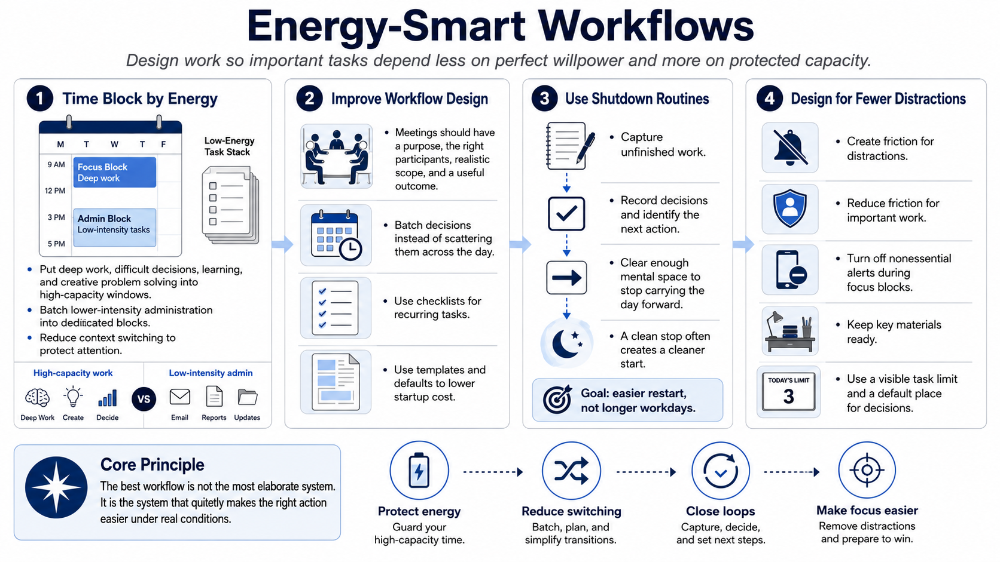

Designing Energy-Smart Workflows
Connecting to LMS... Progress: in progress

Narration
Energy-smart workflows make important work less dependent on perfect willpower. Time blocking by energy level is one practical move. Put deep work, difficult decisions, learning, and creative problem solving into better capacity windows when possible. Put lower-intensity administration into batches. This reduces the number of times attention has to shift and helps protect the kind of energy each task requires.
Meeting hygiene is part of workflow design. Meetings should have a purpose, the right participants, a realistic scope, and a useful outcome. Decision batching can reduce the number of scattered choices across the day. Checklists can lower cognitive load for recurring tasks. Templates and defaults reduce startup cost because people do not have to recreate the same structure every time.
Shutdown routines help close loops. A useful shutdown can capture unfinished work, identify the next action, record decisions, and clear enough mental space to stop carrying the day forward. This is not about forcing longer workdays. It is about making the next start easier and reducing the background hum of unresolved commitments. A clean stop often creates a cleaner start.
Distraction design matters too. Create friction for distractions and reduce friction for important work. That might mean turning off nonessential alerts during focus blocks, keeping key materials ready, using a visible task limit, or setting a default place for decisions. The best workflow is not the most elaborate system. It is the system that quietly makes the right action easier under real conditions.